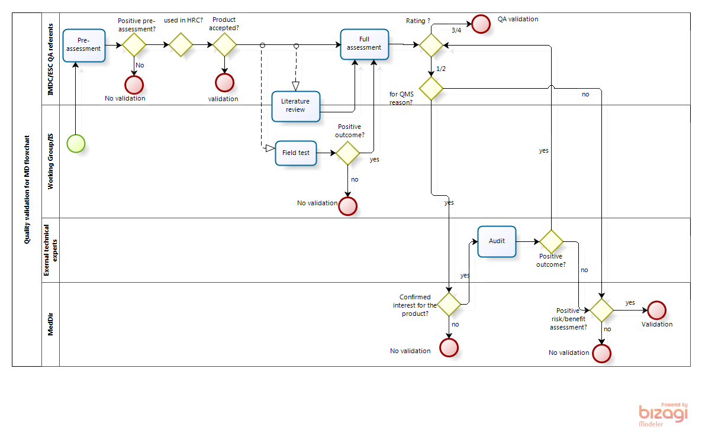

EN 2017 MSF Quality validation scheme
Objectives
To describe the quality validation process for Medical Devices and In Vitro Diagnostics Medical Devices (IVDs) involving the MSF QA network, internal and external technical experts, and the Medical Directors in accordance with the MSF intersectional policy for the quality validation of Medical Devices, including In Vitro Diagnostic Medical Device.
Scope
This SOP is applicable to:
Closed, restricted and open articles, that are:
medical devices class IIa, IIb and III and their specific accessory as defined by the EC Directive 93/42, under the EANE, EDDC, ETME, SCTD, SDDC, SDIS, SDRE, SINS, SMSU, SPPE, SSUR, SSUT, SAST, SBCM, SBID, SBQC, SSCO, STSS or new MSF ITC codes
in vitro diagnostic medical devices and their specific accessories as defined by the EC Directive 98/79 under SSDT or new MSF ITC codes and WHO PQed in-vitro diagnostic medical devices “rest of the world” regulatory version
Products purchased by the MSF European Supply Centers (ESCs) following of a request made at intersection level.
Products already in ESCs portfolios that have to be reassessed according to this SOP.
This SOP is not applicable to:
Biomed articles
Products purchased following a request made by only one Section, however the European Supply Centers (ESCs) are requested to apply a quality validation scheme in line with the standards set in the current procedure, with the support of the International Office if needed.
Local purchase, i.e. purchase within the project countries. For such situations, the draft Guideline for local medical market assessment (last version 18.06.2015) is applicable.
The process of standardization of articles and introduction in the MSF ITC catalogs is out of scope, it follows ITC SOP flowchart.
Responsibilities
Medical Directors (MedDir):
Are accountable for the QA policy for MD used in MSF programs by delegation from the MSF General Directors
Delegate the implementation of the MSF intersectional policy for the quality validation of Medical Devices, including In Vitro Diagnostic Medical Devices to the IMDC
Confirm the medical interest of products (i.e. no other alternative, highly critical products) before an audit is conducted
Accept or reject products based on a medical risk-benefit evaluation
MSF internal Working Groups (WG):
Propose new devices to the International Medical Device Coordinator for quality assessment
Provide the technical characteristics as well as performance and suitability information
Performs a preliminary regulatory screening with the support of the QA referents to ensure that at equal performance and clinical interests, the product with the highest regulatory level is selected
Can be requested to perform desk assessments or to coordinate field tests
For In vitro diagnostic medical devices, evaluates the clinical performance of the product and its usability on the field based on independent and manufacturer’s performance studies and on a review of the literature.
International Medical Device Coordinator (IMDC)
Is responsible for the definition of the quality validation scheme and have it approved by Medical Directors
Coordinates the product assessment for international validation
Initiates product desk assessments and field tests after consultation with the relevant Working Group
Approves or not products based on QA referents and/or internal and external technical experts recommendations
Presents product dossier for decision-making to medical directors where applicable
Organizes the maintenance of the database of validated products
QA referents at European Supply Centers (QA ref):
Support the relevant Working Group, in the preliminary regulatory assessment if requested
Are responsible for collecting all relevant product information from manufacturers for pre-assessment
Can be responsible for full assessment under IMDC request
Inform the manufacturer of any decision regarding their products
Report to the IMDC any problems occurring during the dossier review process
Recommend to withdraw or suspend the validation of a product following evidence of poor quality
Provide information on product availability from supply perspectives
Definitions
External data (MSF internal definition): data not generated by MSF, i.e. data coming from manufacturers or publically available
Highly Regulated Countries or HRC (MSF internal definition): The International Medical Device Regulators Forum (IMDRF (previously Global Harmonization Task Force (GHTF)) founding countries: USA, Canada, Japan, Australia, EU, EFTA (Norway, Iceland, Liechtenstein and Switzerland). Current members also include Brazil, China and Russia.
For the purpose of this SOP Brazil, China, Russia and Turkey are not considered as HRCs.
In vitro Diagnostic Medical Device (IVDMD) (Directive 98/79/EC1) means any medical device which is a reagent, reagent product, calibrator, control material, kit, instrument, apparatus, equipment, or system, whether used alone or in combination, intended by the manufacturer to be used in vitro for the examination of specimens, including blood and tissue donations, derived from the human body, solely or principally for the purpose of providing information:
concerning a physiological or pathological state, or
concerning a congenital abnormality, or
to determine the safety and compatibility with potential recipients, or
to monitor therapeutic measures.
For the classification of in vitro diagnostic medical devices and the corresponding MSF products of interest, see Annex 2.
Medical device (GHTF/SG1/N29:2005, Directive 92/43/EC2) means any instrument, apparatus, implement, machine, appliance, implant, reagent for in vitro use, software, material or other similar or related article, intended by the manufacturer to be used, alone or in combination, for human beings, for one or more of the specific medical purpose(s) of:
diagnosis, prevention, monitoring, treatment or alleviation of disease,
diagnosis, monitoring, treatment, alleviation of or compensation for an injury,
investigation, replacement, modification, or support of the anatomy or of a physiological process, supporting or sustaining life,
control of conception,
disinfection of medical devices,
providing information by means of in vitro examination of specimens derived from the human body;
and does not achieve its primary intended action by pharmacological, immunological or metabolic means, in or on the human body, but which may be assisted in its intended function by such means.
For the classification of a medical device and the corresponding MSF products of interest, see Annex 1.
MSF European Procurement Centers (ESCs): MSF Supply (Neder-Over-Heembeek, BE), Amsterdam Procurement Unit or APU (Amsterdam, NL) and MSF Logistique (Merignac, FR).
Products used in HRCs (MSF internal definition): Products used in at least one HRC (based on publicly available data, i.e. HRCs web sites) and in a public hospital in quantities comparable to MSF ones for a given period of time (based on manufacturer data).
QA network (MSF internal definition): QA referents at ESCs, Medical Devices specialists at Operational Centers (OCs) and International Medical Device coordination
WHO-Prequalification of in vitro diagnostic devices undertakes a comprehensive assessment of individual in vitro diagnostics through a standardized procedure aimed at determining if the product meets WHO prequalification requirements. The prequalification assessment process includes three components:
Review of a product dossier;
Laboratory evaluation of performance and operational characteristics;
And
Manufacturing site(s) inspection.
Focus is placed on in vitro diagnostics for priority diseases (diagnosis and/or monitoring of infection with HIV-1/HIV-2, hepatitis C and B, Malaria, Syphilis, products in rapid test format and/or Point Of Care), and their suitability for use in resource limited settings.
WHO/UNFPA Prequalification of male condoms and IUD assess the medical devices against the relevant ISO standards and the WHO/UNFPA Specification in respect of product quality and safety, production and quality management, regulatory approvals and capacity of production. The assessment involves the following key activities:
Evaluation of documents submitted in response to an invitation for an Expression of Interest (EOI);
Manufacturing site inspection;
Product testing;
Review of testing and inspection reports to inform a decision about the acceptability of each applicant;
5. Procedure
5.1. Flowchart
See Annex 3
5.2 Description
5.2.1 Entry point
MSF Working Group or technical referent at Operational Center level request quality assessment of a new MD or IVDs and provides at least a definition of the product, minimum specifications and rationale for use (ITC request form/ Unidata workflow).
5.2.2 Key steps of the workflow
| Responsible person/ team | Scope | Objective | Origin of data | Type of data assessed | Outcome |
|---|---|---|---|---|---|
It aims to identify critical, high risk or weak areas concerning a medical device/IVD medical device and to establish a baseline against the minimum MSF QA standards |
|||||
| QA network | All products but SSDT (full assessment directly) | To screen candidates for international validation | External data (Manufacturer data and reliable publicly available data regarding the registration status and use of a device) | Regulatory status of the product; Quality management certification; Registration in HRCs; Packaging (labelling, IFU); Technical specifications, basic stability and sterilization data |
Pre-assessment checklist |
|
|||||
| QA network | Products with a positive pre-assessment and not used in HRC | To ensure that the product fulfill the MSF requirements in terms of safety and performance for its use in MSF specific context of activities (temperature, staff training level…) | External data (Manufacturer data and reliable publicly available data regarding the registration status and use of a device) | Manufacturer Quality Management Certification; Conformity assessment route followed by the manufacturer to comply with the EC Directives requirements; Reliability of the Notified Body; Product performance data; Data and study protocols to support claimed shelf-life, sterility data; Labelling and instructions for use; Post-Marketing Surveillance system; Production capacity |
Rating (see Annex IV-V below) |
|
|||||
IMDC for MD, LWG for IVD |
Products with a high level of complexity or a high clinical impact (i.e. specific dressings, flow regulation devices, IVDs) | To assess the product safety and performance based on independent data and to cross check with data provided by manufacturers | External data (Independent studies publicly available) | Published reports/ studies and unpublished data (i.e. biological safety data, bench testing data, complaint and experience records) on Intended use, Safety and performance of the device | Literature review report |
|
|||||
| Working Groups or Internal expert | Not systematic For new products, products which require highly technical skills, products with low complexity but high volume of use (i.e. heal lancet, sutures, Bakri balloon, endotracheal tubes) |
To ensure that the product under assessment fit with MSF specifications and context of use | Internal data (MSF expert opinion) | Usability, Safety and performance of the device in subject | Desk assessment outcome |
The place(s) for field testing is(are) chosen based on the type of the device, qualification of the staff and training in the proper use of the device, and familiarity with the indications, contra-indications and operating procedures recommended by the manufacturer. |
|||||
| Working Groups or Internal expert | Not systematic. For new products, products involving new/ updated protocols, products which require highly technical skills (i.e. blood bags, transfusion sets, safety devices) |
To ensure that the product under assessment fit with MSF specifications and real context of use. To generate training tools. |
Internal data (end user testing) | Usability, Safety and performance of the device in subject |
|
|
|||||
| QA network | Products having undergone a full assessment, and a positive desk assessment or field test where applicable | To discriminate products that can be approved without the Medical Directors approval (3 & 4) from those which require the Medical Directors approval (1 & 2) | External data (manufacturer and public data) and internal (technical review) | Regulatory status Product distribution QMS Safety/performance Stability Sterility when applicable Literature review report |
|
|
|||||
| External experts | Products having undergone a full assessment, for which there is no alternative, and for which the clinical interest has been confirmed by the medical directors |
To investigate in the absence or lack of proof of QMS compliance to international recognized standards | External data(Manufacturer on-site documentation) | SOPs; Batch Manufacturing Record; Quality control; Study reports; … |
|
|
|||||
| Medical Directors | Products with a rating 1 or 2 | To temporarily approve products of limited quality under specific conditions | External and internal data | Characteristics and use of the device, clinical relevance, therapeutic alternatives, performance and quality of the product with regards to MSF activities based on rating, Desk assessment and field test outcome, MSF audit |
|
Exceptional validation by medical directors
Under certain circumstances, a product can be exceptionally validated for a limited period of time and do not completely follow this quality validation scheme.
Devalidation of a product
A product can be devalidated for the following reasons:
When the manufacturer decides to stop the commercialization
When information of a product devalidation is received from the WHO PQ of IVDs program, from any stringent regulatory authorities or from a member of the interagency meeting
When there is a quality complaint and the manufacturer is not responding satisfactorily.
When it is no longer in the ITC catalogue
Monitoring
The product is validated for five years starting from the final validation which is the Product Specification Sheet signature date as described in QA-MD-P04: Product assessment. After this period a monitoring of the product is performed.
The manufacturer is responsible to update MSF QA referent in charge of any change related to the product dossier that impacts the PSS or of any other change should the manufacturer deem it necessary. The PSS should be appended to the contract with the manufacturer.
Annexes
Annex 1: Examples of classification for MDs according to Directive 93/42/EC and US FDA classification rules and the corresponding MSF products of interest (not exhaustive)
| EU | USA | Examples of medical devices | |
|---|---|---|---|
|
Class I | Class I | Non sterile items with a low potential risk SCTD: enterostomy bag, biconical connector SDRE: bandages, non sterile compresses, tape, thread for umbilical cord SSDC: oral syringes, medication cup SINS: EZ-IO drill SMSU: examination gloves stethoscope, reusable surgical instruments (no contact CNS) |
| Class I s | sterile items with a low potential risk SCTD: Urine bag, urinary catheter nelaton, suction tube, extractor mucus neonate SDRE: sterile compresses, clamp for umbilical cord SINS: Syringe without needle, IV giving set, pediatric infusion set, SSUT: adhesive skin closure |
||
|
Class IIa | Class II | SCTD: balloon catheter post-partum, filter breathing circuit, oxygen cannula / tube / mask, suprapubic catheter, urinary catheter foley, penrose and delbet drains, thoracic drains, MVA cannula and device, peritoneal diagnostic set, redon, endotracheal tube, gastric tubes SDRE: kaolin-based hemostatic dressing, abdominal compress SINS: Transfusion set, needles, IV catheters, syringe and IV line for pump, extension tubing, IV catheter, IO needle & dressing, scalp vein inf set, AD and insulin syringes SMSU: electronic thermometer, surgical and gyneco gloves, amniohook EEMD: ECG, suction pumps, powered dermatome, oxygen concentrator Single use surgical instruments, lancets, surgical staplers, blood bank fridge |
| Class IIb | SCTD: ureteral catheter, tracheotomy cannula SINS: bloodbags SMSU: condom (no spermicide) SSUT: non-absorbable sutures Dialysis equipment, ventilators, anesthesia machines, incubator, warming blanket, defibrillator, intensive care monitoring device, insulin pen |
||
| Class III | SINS; needle for rachis or LP SDRE: fibrin sealant dressing, chitosan hemostatic dressing SMSU: IUD SSUT: absorbable sutures, non absorbable mesh |
Annex 2: Classification of IVDMD according to the directive 98/79/EC and the corresponding MSF products of interest
| Classifi-cation | IVD | Products of interest for MSF | |
|---|---|---|---|
| Annex II List A | Reagents and reagent products, including related calibrators and control materials, for determining the following blood groups: ABO system, rhesus (C, c, D, E, e) anti-Kell | Blood grouping tests (anti-A, anti-AB, anti B, Rhesus anti-D) RH negative control tests Bedside control cards for ABO compatibility |
|
| Reagents and reagent products, including related calibrators and control materials, for the detection, confirmation and quantification in human specimens of markers of HIV infection (HIV 1 and 2), HTLV I and II, and hepatitis B, C and D; tests used to screen donated blood for vCJD* | HIV 1 & 2 RDT HCV RDT HBV RDT |
||
| Annex II List B | Reagents and reagent products, including related calibrators and control materials, for determining the following blood groups: anti-Duffy and anti-Kidd | none | |
| Reagents and reagent products, including related calibrators and control materials, for determining irregular anti-erythrocytic antibodies | none | ||
| Reagents and reagent products, including related calibrators and control materials, for the detection and quantification in human samples of the following congenital infections: rubella, toxoplasmosis | none | ||
| Reagents and reagent products, including related calibrators and control materials, for diagnosing the following hereditary disease: phenylketonuria | none | ||
| Reagents and reagent products, including related calibrators and control materials, for determining the following human infections: cytomegalovirus, chlamydia | none | ||
| Reagents and reagent products, including related calibrators and control materials, for determining the following HLA tissue groups: DR, A, B | none | ||
| Reagents and reagent products, including related calibrators and control materials, for determining the following tumoral marker: PSA | none | ||
| Reagents and reagent products, including related calibrators, control materials and software, designed specifically for evaluating the risk of trisomy 21 | none | ||
| The following device for self-diagnosis, including its related calibrators and control materials: device for the measurement of blood sugar | Blood glucose strips | ||
| IVDs for self-testing | Excluding self-test IVDs covered in Annex II | Pregnancy RDT Reagents for CD4 automate |
|
General IVDs (Not A / not B) |
Any IVD not identified in Annex II List A or List B or for self-testing | Tropical disease Malaria RDT Cholera RDT Cryptococcus RDT Leishmaniasis RDT Dengue RDT Meningitis RDT Trypanosoma RDT |
Non tropical disease Syphilis RDT Rotavirus test Adenovirus test Biochemistry Urine strips |
Annex 3: Flowchart

Annex 4: Medical devices Rating Table
| Rating | Regulatory status | Distribution | Quality Management System | Safety / performance | Stability data | Validation decision |
|---|---|---|---|---|---|---|
| 4 | CE mark by NB cat I, FDA PMA, WHO PQ* | Widely used in HRCs | Compliant with ISO 13485 (CAB cat I) or satisfactory audit report issued by NB cat II, and/or FDA QSR 820 | Satisfactory Independent performance data; All applicable standards are addressed by manufacturer; All safety and performance parameters are well characterized; label truthful Adequate and reliable sterilization data |
Real time studies report(s) on at least 3 production lots fully support the claimed shelf-life | Product is validated, routine monitoring |
| 3 | CE mark by NB cat II, FDA 510(k) | Used in some HRC | Compliant with ISO 13485 (CAB cat II) or equivalent | Partially satisfactory Independent performance data; No exhaustive list of applicable standards; Risk/benefits addressed with minor deficiencies Partially satisfactory sterilization data |
Real time studies on going supporting at least 6 months, accelerated studies report on 3 lots available support claimed shelf-life | Product is validated, missing data should be provided by the manufacturer, MSF audit or technical visit for follow-up |
| 2 | CE mark by NB cat III | Used in non HRC | Compliant with ISO 13485 (CAB cat III) | Limited data (performance, sterility, risk management, standards | Limited stability data | Validation by MedDir is required, product can be validated under conditions specified by MedDir |
| 1 | No CE mark | Not used | No ISO 13485 and no FDA QSR 820 | Not documented | Stability data not satisfactory or absence of stability data | Validation by MedDir, product can be validated under conditions specified by MedDir, for a limited period of time |
*Only for Condoms and IUDs, the WHO Prequalified Devices and Equipment from the PQS catalogue (E008 - Injection devices for immunization and E013 - Injection devices for therapeutic purposes) are not considered for the purpose of the rating
Annex 5: IVD rating table
| Rating | Regulatory status and use | Quality Management System | Performance (assessed by LWG, rated by IMDC) | Stability data | Labelling | MSF validation route |
|---|---|---|---|---|---|---|
| 4 | WHO PQ or ERPD cat 1 or 2 or CE mark or FDA clearance and used in HRC | Compliant with ISO 13485 (CAB cat I) or satisfactory audit report issued by NB cat II and/or FDA QSR 820 | Adequate evidence of analytical and clinical performance | Real time studies report(s) on at least 3 production lots fully support the claimed shelf-life | Fully compliant with MSF specs | Product is validated, routine monitoring |
| 3 | CE mark or FDA clearance but NOT used in HRC | Compliant with ISO 13485 (CAB cat II) or equivalent | Adequate evidence of analytical but limited clinical performance, additional studies on going | Real time studies on going supporting at least 6 months, accelerated studies report on 3 lots available support claimed shelf-life | Partially compliant with MSF specs | Product is validated, missing data should be provided by the manufacturer, MSF audit or technical visit for follow-up |
| 2 | No CE mark, no FDA clearance but used in other countries | Compliant with ISO 13485 (CAB cat III) | Limited performance data (i.e. method not acceptable) | Limited stability data | Minor deficiencies | Validation by MedDir is required, product can be validated under conditions specified by MedDir |
| 1 | No CE mark, no FDA clearance, not used | No ISO 13485, no FDA QSR 820 | Insufficient evidence of performance or absence of performance data | Stability data not satisfactory or absence of stability data | Major deficiencies | Validation by MedDir is required, product can be validated under conditions specified by MedDir, for a limited period of time |
Related documents
MSF intersectional policy for the quality validation of Medical Devices, including In Vitro Diagnostic Medical Device (Sept 2017).
Draft Guideline for local medical market assessment (last version 18.06.2015)
QA-MD-P03 Product assessment
QA-MD-DB07 Summary Table of Assessment Bodies
QA-MD-DB06 Products
ITC Request form Medical Material MSF Catalogue/ Unidata workflow
Medical Working Groups Contact List available at https://tukul.msf.org/meetings-projects/contacts-and-calendars
ITC flowchart
Document history
| Version | Effective date | Reason for change |
|---|---|---|
| 01 | Creation | |
| Prepared by: Luminita Barbu | Reviewed by: Elsa Tran, IMDC | Validated by: Myriam Henkens, IMC |
|---|---|---|
| Date: | Date: | Date: |
| Signature: | Signature: | Signature: |
Superseded by Regulation (EU) 2017/746 entering into force in spring 2022↩︎
Is supersedes by Regulation (EU) 2017/745 entering into force in spring 2020↩︎